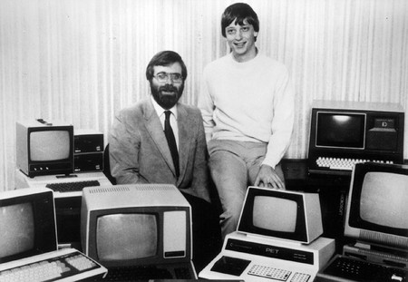
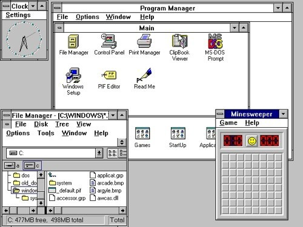

Y aqui llego todo...
Bueno, pues para contar una historia como dice Homer Simpson lo mejor es el final, pero para llegar a eso debemos tener un comienzo. Y eso es lo que viene ahora
1975

Bill Gates y Paul Allen fundan Microsoft con la intención de llevar un
ordenador personal a cada hogar del mundo.
IBM contacta con Microsoft para iniciar un nuevo proyecto que los
lanzaría a la fama. Se trataba de un nuevo sistema operativo llamado “MS-DOS” el cual se convirtió en el software predeterminado de IBM, pero este
SO estaba orientado a informáticos y no tanto a la gente en genera por lo
que les resultaba difícil de usar a muchas personas.
1983

Se anunció el primer sistema operativo propio de Microsoft cuyo nombre
era “Interface Manager”. Sin embargo, decidieron renombrarlo con el
nombre de “Windows” el cual describiría mejor su sistema de ventas con
información.
Luego en realidad, fue en 1985 cuando Microsoft lanzó Windows 1.0. Este
tenía una interfaz gráfica en donde se podía utilizar un ratón para señalar
y hacer clic en las diferentes ventanas.
Asistencia técnica:
Hasta el 31 de diciembre de 2001
Requisitos:
- 256 kilobytes
- 512 KB de memoria
- Un disco duro (recomendado)
- 2 unidades de disquetes de doble cara
- Tarjeta adaptadora de gráficos
1987

Microsoft lanza Windows 2.0, la primera versión de Windows en incluir un
panel de control, atajos de teclado e iconos en el escritorio.
Con Windows 2.0 ya se podía extender la memoria y superponer
ventanas, además de que se añadió nuevas aplicaciones gráficas como
Excel o Word. Esta versión fue la más popular en el momento e hizo que
Microsoft se convirtiera en la empresa de software más importante del
mundo.
Asistencia técnica:
Hasta el 31 de diciembre de 2001
Requisitos:
- MS-DOS versión 3.0 o más
- 512 KB de memoria
- Un disco duro (recomendado)
- Un disco floppy
- Tarjeta adaptadora de gráficos
- Un ratón (opcional)
1990

Windows 3.0 fue lanzado en mayo de 1990 con programas como el
administrado de archivos, administrador de programas o el administrador
de impresión, además de los legendarios juegos del solitario y el
buscaminas.
En 1992 mejoraron la versión 3.0 lanzado la versión 3.1 mejorada con
posibilidad de compartir dispositivos entre DOS y Windows.
Ambas versiones consiguieron vender más de 10 millones de copias,
convirtiendo a Windows en el Sistema Operativo más usado del mundo.
Asistencia técnica:
Hasta el 31 de diciembre de 2001
Requisitos:
- Procesador Intel 8088 o mejor
- 384 KB de memoria
- Un disco duro de 20 MB
- Gráficos con soporte CGA/EGA/VGA
- MS-DOS versión 3.1 o superior
- Un ratón (opcional)
1995

Windows 95 se lanzó en el mercado el 24 de agosto de 1995 con una
nueva interfaz de usuario y la capacidad de detectar automáticamente y
configurar el hardware instalado.
Ya se podrían ejecutar aplicaciones de 32-bits. Tenía compatibilidad
integrada con Internet; aparece por primera vez el menú Inicio, los
botones de minimizar, maximizar y cerrar ventanas además de la barra de
tareas.
Se publica la primera versión de Internet Explorer que fue el mejor
navegador web de la época.
Asistencia técnica:
Hasta el 31 de diciembre de 2001
Requisitos:
- Procesador 80386 DX o mejor
- 4 MB de memoria
- Un disco duro con 60 MB
- Un disco duro de 3.5 pulgadas
- Resolución VGA o superior
- Un ratón (opcional)
1998

El 25 de junio de 1998 Microsoft lanza Windows 98 el cual seguía
implementando la barra Inicio e Internet Explorer.
Microsoft fue acusado y declarado culpable de constituir un monopolio y
Windows 98 fue la última versión basada en MS-DOS
Asistencia técnica:
Hasta el 11 de julio de 2006
Requisitos:
- Procesador 486 DX2 de 66 MHz o superior
- 16 MB de memoria
- Un disco duro con 300-400 MB
- Resolución VGA o superior
- Lector CD
- Un ratón (opcional)
2000

Microsoft lanzó Windows Millennium Edition (Windows ME) como
“parada” entre Windows 98 y Windows XP y así fue ya que fue el más
odiado por los usuarios por su inestabilidad y su interfaz gráfica simple.
Asistencia técnica:
Hasta el 11 de julio de 2006
Requisitos:
- Procesador Pentium o compatible de 150 MHz
- 32 MB de memoria
- Un disco duro con 320 MB
- Resolución VGA o superior
- Lector CD
- Un ratón (opcional)
2001

El día más esperado por los usuarios de Microsoft, el 25 de octubre de
2001 cuando se lanza Windows XP el cual se convirtió en una de las
versiones más alabadas de todos los tiempos.
Fue el primer sistema operativo de Microsoft orientado al consumidor que
se construye con un núcleo y arquitectura de Windows NT con versiones
de 32 y 64 bits.
Con Windows NT, este nuevo SO presentaba mejor estabilidad y mejoras
en el rendimiento. Su nueva interfaz gráfica de usuario (GUI) hizo más fácil
su uso.
También fue la primera versión de Windows en utilizar la activación del
producto para reducir la piratería del software.
Asistencia técnica:
Hasta el 8 de abril de 2014
Requisitos:
- Procesador con 233 MHz o superior
- 64 MB de memoria
- Un disco duro de 20 MB
- Un disco duro con 1.5 GB
- Resolución VGA o superior
- Lector CD
- Un ratón (opcional)
2007

El 30 de enero de 2007 fue el lanzamiento mundial de Windows Vista con
el sistema de seguridad más sólido hasta el momento
Ofrece mayor compatibilidad con nuevas tecnologías y dispositivos
además de introducir el reproductor de Windows Media. La barra de
tareas o los bordes de las ventanas tendrán un nuevo aspecto
Asistencia técnica:
Hasta el 11 de abril de 2017
Requisitos:
- Procesador con 800 MHz o superior
- 512 MB de memoria
- Un disco duro con 15 GB
- Resolución VGA o superior
- Lector CD
- Tarjeta gráfica compatible con DirectX 9.0
- Un ratón y teclado
2009

En julio de 2009 Microsoft puso a la venta Windows 7 considerado por
muchos usuarios como la mejor versión moderna del sistema operativo
Windows 7 fue concebido como una actualización de Vista y su núcleo NT
6.0, sin embargo, para Windows 7 se dio importancia en mejorar su
interfaz para hacerla más accesible al usuario e introducir características
nuevas para conseguir mayor eficacia y facilidad en las tareas
Asistencia técnica:
Hasta el 14 de abril de 2020
Requisitos:
- Procesador con 1 GHz o superior
- 2-4 GB de memoria
- Un disco duro de 20 GB
- Resolución VGA o superior (800x600)
- Lector CD
- Tarjeta gráfica compatible con DirectX 9.0
- Un ratón y teclado
2012

En 2012 Microsoft presentó Windows 8 con muy poca afluencia por lo que
decidió lanzar una nueva versión, la versión Windows 8.1 en la cual
desaparece el menú Inicio clásico y el modo de pantalla completa de las
aplicaciones modern
Sin embargo, esta nueva versión era un sistema muy estable y rápido con
una gran compatibilidad hardware. Añade soporte para
microprocesadores ARM además de los x86 de Intel y AMD
Asistencia técnica:
Hasta el 12 de enero de 2016
Requisitos:
- Procesador con 1 GHz o superior
- 2 GB de memoria
- - Un disco duro con 20 GB
- - Resolución capacitiva (1024x768)
- Tarjeta gráfica compatible con DirectX 9.0
- Un ratón y teclado
2015

Por primera vez una versión de Windows se ofrecía de manera gratuita a
los usuarios. Windows 10 es considerado por muchos una de las mejores
versiones del sistema.
Fue lanzado al público en general el 29 de julio de 2015.
Esta edición introdujo una arquitectura de aplicaciones “universales” las
cuales puede ejecutarse en todas las familias de productos de Microsoft
Uno de los aspectos más importantes de Windows 10 es el enfoque en la
experiencia del usuario y en la funcionalidad entre los diferentes tipos de
dispositivos, además de abordar deficiencias en la interfaz del usuario que
se introdujo con Windows 8.
Asistencia técnica:
Hasta el 14 de octubre de 2025
Requisitos:
- Procesador x86 o x64 de 1 GHz o superior
- 2 GB de memoria
- Un disco duro con 32 GB
- 800x600 pixeles de resolución
- Dispositivo gráfico con DirectX 9 WDDM 1.0 o más reciente
- Un ratón y teclado
2021

Windows 11 fue lanzado oficialmente el 5 de octubre de 2021, como una
actualización gratuita de Windows 10.
Esta nueva versión cuenta con un menú Inicio rediseñado, el reemplazo de
sus iconos dinámicos, la capacidad de crear conjuntos de ventas en
mosaico que se pueden minimizar y restaurar desde la barra de tareas
como grupo.
Internet Explorer queda totalmente eliminado y reemplazado por Blink
que se basa en Microsoft Edge.
En aspectos de seguridad, Windows 10 tiene requisitos de hardware más
estrictos que Windows 10.
Asistencia técnica:
No tiene fecha de fin de asistencia técnica
Requisitos:
- Procesador x86-64 o ARM64 con 1 GHz y 2 núcleos
- 4 GB de memoria
- Un disco duro con 64 GB
- UEFI
- TPM 2.0
- Dispositivo gráfico con DirectX 12 WDDM 2.0 o más reciente
- 720p, 8 bits por canal de color
- Un ratón y teclado